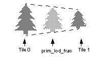
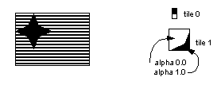
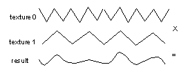

|
|
Multi-Tile Effects
There are eight tile descriptors available in the tile memory of the RDP. These tile descriptors contain information about the type and size of tiles and where these tiles are located in Tmem. In two-cycle mode, texture from two tiles is available for each pixel. Many effects are possible by manipulation of tile descriptors and combining of the textured pixels.
In the g*DPLoadTexture* commands, a simple two-tile system is used for loading and rendering. In this system, the G_TX_LOADTILE is used for loading a tile starting at Tmem address 0 and the tile descriptor G_TX_RENDERTILE is set up for rendering the tile. This is a double-buffering scheme which avoids having to insert tile sync commands in the load macro. Notice that since each tile is loaded at Tmem address 0 and the G_TX_RENDERTILE is always used for rendering, we cannot use these macro for loading multiple tiles into Tmem.
In order to allow the user to manage Tmem for multi-tile effects, the load macros g*DPLoadMultiTile and g*DPLoadMultiBlock were created. These macros allow the user to specify the Tmem address of the tile and the tile descriptor number to use when rendering this tile.
Simple Morph
Example 14-22 Interpolate Between Two Tiles
One simple use of two tiles is to linearly interpolate, using a parameter to indicate the blend amount, between the tiles. A register value in the color combiner, such as primitive alpha, can be used as the ‘slider’ to blend between the two textures as shown in Example 14-22. Notice that we define our own color combine mode to achieve this effect, since gbi.h didn’t have the mode we needed.
#define MY_MORPH TEXEL1, TEXEL0, PRIMITIVE_ALPHA, TEXEL0, \
TEXEL1, TEXEL0, PRIMITIVE, TEXEL0
gsDPSetCyleType(G_CYC_2CYCLE),
gsDPSetTextureLOD(G_TL_TILE),
gsDPSetPrimColor(0, 0, 0, 0, 0, 128), /* 0.5 blend */
gsDPSetCombineMode(MY_MORPH, G_CC_PASS2),
gsDPLoadMultiTile(face0,
0, /* Tmem address in 64-bit words */
G_TX_RENDERTILE, /* tile */
G_IM_FMT_RGBA, G_IM_SIZ_16b,
32, 32,
0, 0, 31, 31,
0,
G_TX_NOMIRROR, G_TX_NOMIRROR,
G_TX_NOMASK, G_TX_NOMASK,
G_TX_NOLOD, G_TX_NOLOD),
gsDPLoadMultiTile(face1,
256, /* Tmem address in 64-bit words */
G_TX_RENDERTILE+1, /* tile */
G_IM_FMT_RGBA, G_IM_SIZ_16b,
32, 32,
0, 0, 31, 31,
0,
G_TX_NOMIRROR, G_TX_NOMIRROR,
G_TX_NOMASK, G_TX_NOMASK,
G_TX_NOLOD, G_TX_NOLOD),
gsSPTextureRectangle(glistp++,
50 << 2, 50 << 2, 82 << 2, 82 << 2,
G_TX_RENDERTILE,
0, 0,
1 << 10, 1 << 10);
By making the primitive alpha an animation variable, a simple ‘morph’ effect can be achieved.
Smoothing Flip-Book Animations
Often sprite animations are a sequence of key frames which are selected at the appropriate time by some animation variable. The linear interpolation between two images as described in “Simple Morph” above can be used to smoothly transition between two key frames. Imagine a series of n images in an animation selected using an animation variable frame. The integer part of frame is called frame_i and the fractional part is called frame_f. An algorithm for smoothing the sequence is described in Example 14-23.
Example 14-23 Smoothing an Animation Sequence
Load tiles frame_i and frame_i+1 into Tmem Set primitive alpha = 256 * frame_f Render the rectangle using MY_MORPH combiner mode
The frames do not necessarily have to be related in time. For example, you could interpolate between different flame images that are randomly selected to create a fire effect.
Shrinking Sprites
In the previous discussion of scaling in “Bilinear Filtering,” we only discussed scaling a sprite to a larger size since scaling it smaller would result in aliasing effects. It is possible to effectively shrink an image by interpolating between two tiles, one of which is a half the size of the other tile. This is shown in Figure 14.4.1. Prim_lod_frac is a register in the color combiner that can be used to indicate the fractional distance between the two ‘levels-of-detail’ of the sprite. Note that there is no special reason we used this register as the interpolation parameter, other than it’s name suggests this use.
Figure 14.4.1 Shrinking a Sprite
|  |
One of the tile descriptor parameters is the shift (see Section 13.4.8, “Shift S,T”) that describes how many places to bitwise shift the tile coordinates for the primitive. This implies that one tile’s size is related to the other’s by some integer shift, but the tiles don’t necessarily have to be power of two sizes. Example 14-24 shows the code to create a sprite that is 0.75 the size of the larger image. The user must scale the size of the rectangle primitive by the desired amount as well.
Example 14-24 Shrinking a Sprite
#define MY_LOD TEXEL1, TEXEL0, PRIM_LOD_FRAC, TEXEL0, \ TEXEL1, TEXEL0, PRIM_LOD_FRAC, TEXEL0 gsDPSetCyleType(G_CYC_2CYCLE), gsDPSetTextureLOD(G_TL_TILE), gsDPSetPrimColor(0, 128, 0, 0, 0, 0), /* 0.5 lod_frac */ gsDPSetCombineMode(MY_LOD, G_CC_PASS2), gsDPLoadMultiTile(face0, 0, /* Tmem address in 64-bit words */ G_TX_RENDERTILE, /* tile */ G_IM_FMT_RGBA, G_IM_SIZ_16b, 32, 32, 0, 0, 31, 31, 0, G_TX_NOMIRROR, G_TX_NOMIRROR, G_TX_NOMASK, G_TX_NOMASK, G_TX_NOLOD, G_TX_NOLOD), gsDPLoadMultiTile(face1, 256, /* Tmem address in 64-bit words */ G_TX_RENDERTILE+1, /* tile */ G_IM_FMT_RGBA, G_IM_SIZ_16b, 16, 16, 0, 0, 15, 15, 0, G_TX_NOMIRROR, G_TX_NOMIRROR, G_TX_NOMASK, G_TX_NOMASK, G_TX_NOLOD, G_TX_NOLOD), gsSPTextureRectangle(glistp++, 50 << 2, 50 << 2, 82 << 2, 82 << 2, G_TX_RENDERTILE, 8 << 5, 8 << 5, 1 << 10, 1 << 10);
Texture Decals
We can use the alpha of one tile to select between the texel color of two different tiles to create a texture decal. Figure 14.4.2 shows an example of a flag created using textures decals. The insignia of the flag has transparency around it’s edges. After mirroring and wrapping once, the texture is clamped. In the color combiner, the texture alpha is used to interpolate between the flag stripes and the insignia. Where the alpha is zero, the stripes will show, where the alpha is one, the insignia will show.
Figure 14.4.2 Texture Decals
|  |
Interference Effects
Multiplying two textures together, especially while sliding the textures relative to each other can create interference patterns. For example, a horizontal stripe pattern multiplied by a vertical stripe pattern creates a set of bright spots at the intersection of the points. If the stripes are slid relative to each other, the points will move also. Multiplying can also be used to modulate one image with another. For example, Figure 14.4.3 shows a complex wave resulting from the modulation of two simple waves.
Figure 14.4.3 Modulation
|  |
|
Copyright © 1999 Nintendo of America Inc. All Rights Reserved Nintendo and N64 are registered trademarks of Nintendo Last Updated January, 1999 |